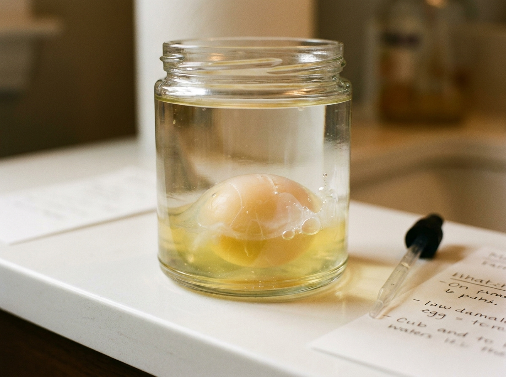
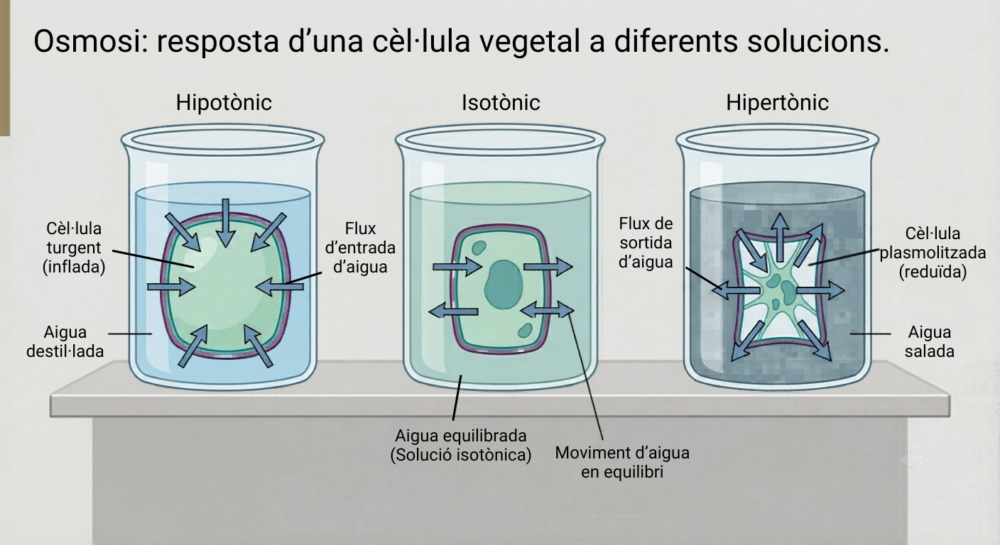

Un ou en vinagre 48 h perd la closca i queda cobert només per la membrana. El posarem en aigües amb diferent concentració de sal.
✏️ Formula una hipòtesi completa ("Si... aleshores... perquè...") per als dos casos: ou en aigua pura i ou en aigua amb molta sal. Indica també què esperes mesurar (massa, mida, fermesa).
✏️ Pesa cada ou ABANS i DESPRÉS (24 h). Calcula la variació absoluta i el percentatge de canvi respecte a la massa inicial.

| Condició | Massa inicial (g) | Massa final (g) | Canvi de massa (final − inicial; amb signe + o −) | % canvi (Δ/inicial) | Observacions |
|---|---|---|---|---|---|
✕ 💧 Aigua pura |
|||||
✕ 🧂 Aigua amb sal |
|||||
✕ 🍶 Vinagre (control) |
💡 Proposa una millora del disseny experimental que faria les conclusions més sòlides.
La membrana és semipermeable: deixa passar l'aigua però frena el pas de la sal. L'aigua es mou per osmosi cap al costat amb més sal fins a igualar les concentracions dels dos costats.
🧠 Redacta l'explicació del teu experiment amb l'estructura AER: Afirmació → Evidència (les teves dades i %) → Raonament (mecanisme de l'osmosi). Usa "concentració", "membrana semipermeable" i "equilibri".
Els biòlegs anomenen el medi hipotònic (menys sal que la cèl·lula → s'infla), isotònic (igual → sense canvi) i hipertònic (més sal → s'arruga). Compte: hipotònic / isotònic / hipertònic descriuen el líquid de fora; la cèl·lula queda turgent (inflada) o plasmolitzada (encongida). Mira l'esquema de sota. Per a cada cas, escriu si l'ou del teu experiment s'hi comportaria igual i per què.

Una cèl·lula vegetal en aigua destil·lada està en un medi i la cèl·lula queda ; en aigua molt salada el medi és i la cèl·lula queda .
🧠 Metacognició — 3 min